Ref. AWS SAA - CloudWatch, CloudTrail, Config, Trusted Advisor, ADS, SMS, DMS
AWS Trusted Advisor
概要
- リソースを自動でチェックし、ベストプラクティスに基く推奨設定を通知。
- アカウント作成後にデフォルトで有効。
Ref.
- https://aws.amazon.com/premiumsupport/trustedadvisor/
- https://d1.awsstatic.com/webinars/jp/pdf/services/20180711_AWS-BlackBelt_TrustedAdvisor_public.pdf
- https://dev.classmethod.jp/cloud/aws/cm-advent-calendar-2015-getting-started-again-aws-td/
次の項目について推奨事項を提示:
- ダッシュボードで確認。
- メール送信と CloudWatch Events 送信が設定できる。

AWS Trusted Advisor のチェックの自動更新は Weekly-base
AWS Support API:
-
DescribeTrustedAdvisorChecks
- チェック項目の一覧。ここから checkId を取得。
-
RefreshTrustedAdvisorCheck
- 特定チェックの結果を更新 (Refresh)
-
DescribeTrustedAdvisorCheckRefreshStatuses
- Refresh 中のチェック項目のステータスを取得
-
DescribeTrustedAdvisorCheckSummaries
- 指定した複数チェック項目の現在のチェック結果をサマリ表示
-
DescribeTrustedAdvisorCheckResult
- 指定したチェック項目の現在のチェック結果を取得
-
https://docs.aws.amazon.com/ja_jp/awssupport/latest/APIReference/API_Operations.html
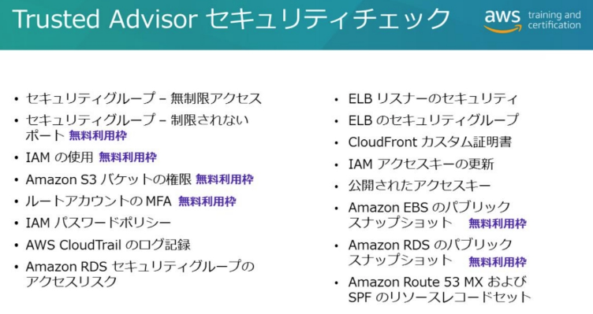
-
Basic/Developer ライセンスは無料利用枠の機能のみ
- セキュリティグループの 23 番など特定ポートへの無制限アクセス、パブリックバケット、ルートアカウントの MFA、パブリックスナップショット
-
全機能を使うにはビジネス/エンタープライズ以上が必要。
オートメーション: CloudWatch Events 連携
- グローバルサービスなので us-east-1 でしかイベントソースに表示されない。
Usecase:
- ルートボリュームが EBS のインスタンスはランタイムでインスタンスタイプを変更できる
- https://github.com/aws/Trusted-Advisor-Tools/tree/master/HighUtilizationEC2Instances
CloudWatch メトリクスも CloudWatch Events 同様の項目で存在
- https://docs.aws.amazon.com/ja_jp/awssupport/latest/user/cloudwatch-metrics-ta.html#cloudwatch-metrics-dimensions-for-trusted-advisor
- 問題例: 使用されていない ELB の通知を実現できるオプション
- Use Amazon CloudWatch to create alarms on Trusted Advisor metrics in order to detect the load balancers with low utilization. Specify an SNS topic for notification.
- Utilize CloudWatch Events to monitor Trusted Advisor recommendation results. Set up a trigger to send an email using SNS to notify you about the results of the check.
- Create a Lambda function and integrate it with CloudWatch Events. Configure the function to run on a regular basis and to check AWS Trusted Advisor via API. Based on the results, publish a message to an Amazon SNS Topic to notify the subscribers.
問題例:
EC2インスタンスのいずれかに無制限のSSHアクセスが有効になっているかどうかを調査するよう求められています。どのようにこれにアプローチすべきですか？(2つ選択)
正解: Trusted Advisor, AWS Config
- Trusted Advisor は特定ポートへの無制限のアクセスを許可するルールがないかセキュリティグループをチェックする。
- AWS Config は restricted-ssh マネージドルールでセキュリティグループの受信SSHトラフィックがアクセス可能か確認できる。(IP アドレス制限されている場合はCOMPLIANTとなる)
IAM Access Analyzer
- リソースベースのポリシーを分析し、外部プリンシパルと共有されるリソースを表示。
- 24時間に1回スキャン。意図して許可したものは「アーカイブ済」に移動できる。
- 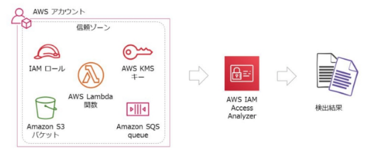
-
対象サービス
- IAM ロール, S3 バケット, KMS キー, Lambda 関数/レイヤー, SQS キュー
-
例
- クロスアカウントが許可されたロールの確認
- パブリックアクセスのバケットの確認
S3 Access Analyzer (Access Analyzer for S3)
- パブリックバケット・他の AWS アカウントに公開されたバケットを検出。
- その場でブロックに変更することも可能。
- IAM Access Analyzer がベース。

Logging Summary
| 種類 | 保管・送信先 | 備考 |
| CloudWatch Logs | ログストリーム, S3(手動エクスポート) |
EventBridge でスケジュール実行した Lambda による Export API 実行や、サブスクリプションフィルター+Firehose で S3 への保存の自動化が可能。 |
| CloudTrail | S3, CloudWatch Logs(オプショナル) | |
| VPC Flow Logs | S3, CloudWatch Logs | VPC 内のトラフィックログ。 |
| DNS ログ | S3, CloudWatch Logs, Kinesis Data Firehose | Route 53, VPC Route53 Resolver の DNS クエリログ。 Route 53 は CloudWatch Logs のみ。 |
| S3 アクセスログ | S3 | |
| ELB アクセスログ | S3 | |
| Web ACL トラフィックログ | Kinesis Data Firehose, S3, CloudWatch Logs |
|
| Route53 アクセスログ | CloudWatch Logs | |
| CloudFront アクセスログ | S3 |
アプリケーションログ
- EC2 インスタンス: CloudWatch Agent から CloudWatch Logs へ
- ECS: ECS Agent から CloudWatch Logs へ
- Beanstalk
CloudTrail
SDK, CLI, 管理コンソールを含む全 API コールをロギング
- ユーザに代わって AWS サービスが API コールする場合も含む (CloudFormation, Auto Scalling 等)
ログイン試行イベントも記録される
- アカウントでデフォルトで有効。[イベント履歴] で過去 90 日間のイベントが表示される。
- イベントは JSON/CSV でダウンロードできる。
- 認証されたプリンシパルの情報
- API リクエストのタイムスタンプ, API エンドポイント, Source IP, User Agent,
- リクエストパラメータ、レスポンスの情報
問題例:
2週間前に発生したセキュリティインシデント調査を依頼されました。誰かがVPCにバックドアを作るために未承認のインスタンスをプロビジョニングしたと疑っています。何が起こったか確認するためにどのツールを使用しますか？
- 正: CludTrail / 誤: AWS Config
- CloudTrail はデフォルト有効で証跡を保存していなくても 90日間のイベントを確認できる。
- CloudTrail は API 操作とログインの確認、AWS Config はリソースの設定の確認。このケースではインスタンス作成の操作とアクセス元などを確認する。
証跡 (Trail)
CloudTrail イベントを S3 バケットに保存する
- JSON が送られる。デフォルト無効。S3 バケットに約 5 分ごとにログファイルを送信する。
-
オプションで CloudWatch Logs にも送信できる。
- アプリ連携には CloudWatch Events を CloudTrail をソースにして設定。
-
証跡はデフォルトで S3-KMS で暗号化。
- 設定は S3 バケット側でなくて CloudTrail 側で設定する。
- デフォルト暗号化でなく証跡に指定した CMK でオブジェクトを暗号化する。
-
証跡を Athena で SQL 分析できる。
証跡に保存するイベントタイプの設定
Management events
- Management events provide insight into management operations that are performed on resources in your AWS account.
- These are also known as control plane operations.
- Management events can also include non-API events that occur in your account. For example, when a user logs in to your account, CloudTrail logs the ConsoleLogin event.
Data events
- These events provide insight into the resource operations performed on or within a resource.
- These are also known as data plane operations.
クロスリージョン・クロスアカウントのログ(証跡)統合
- クロスリージョン・クロスアカウントで証跡を 1つの S3 バケットに配信できる。
-
Multi-region trail
- デフォルトで全リージョンのログを保存する証跡が作成される。
- 新しいリージョンを立ち上げた時も自動で対象になる。
- https://docs.aws.amazon.com/awscloudtrail/latest/userguide/receive-cloudtrail-log-files-from-multiple-regions.html
-
クロスアカウントのログ統合
- 中央アカウントにバケットを作り、各アカウントで証跡をそこに配信するよう設定する。
- バケットポリシーで CloudTrail サービスに各アカウントのフォルダへの書き込みを許可する
{
"Sid": "AWSCloudTrailWrite20131101",
"Effect": "Allow",
"Principal": {
"Service": "cloudtrail.amazonaws.com"
},
"Action": "s3:PutObject",
"Resource": [
"arn:aws:s3:::myBucketName/optionalLogFilePrefix/AWSLogs/111111111111/*",
"arn:aws:s3:::myBucketName/optionalLogFilePrefix/AWSLogs/222222222222/*"
],
"Condition": {
"StringEquals": {
"aws:SourceArn": "arn:aws:cloudtrail:region:myAccountID:trail/trailName",
"s3:x-amz-acl": "bucket-owner-full-control"
}
}
}
- [https://docs.aws.amazon.com/awscloudtrail/latest/userguide/cloudtrail-receive-logs-from-multiple-accounts.html](https://docs.aws.amazon.com/awscloudtrail/latest/userguide/cloudtrail-receive-logs-from-multiple-accounts.html)
- Organizations を使うと個別に設定しなくても組織証跡で一括できる。
- オプションでクロスアカウントの CloudWatch Logs ロググループにも同時に配信できる。
組織証跡 (organization trail)
- Organizations で使用できる、全アカウントの CloudTrail ログを保存する証跡。
- 各メンバーアカウントに組織証跡に設定したのと同じ名前の証跡ができる。
- メンバーアカウントのユーザは証跡の情報を見ることができるが、削除・変更や無効化ができない。またデフォルトでは S3 バケット内のログも見られない。
- 新しく所属するアカウントにも適用される。
https://docs.aws.amazon.com/awscloudtrail/latest/userguide/creating-trail-organization.html
ログファイルの検証 (ダイジェストファイル)
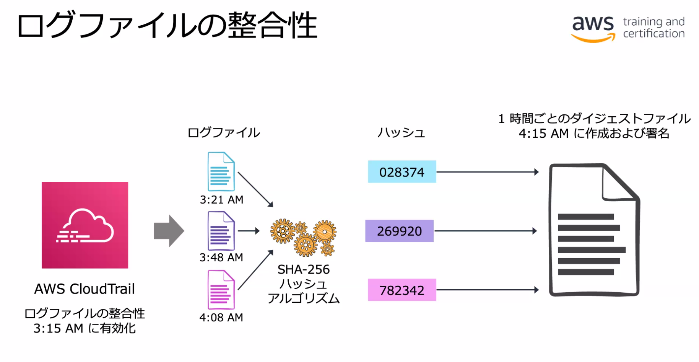
- 証跡の作成時にデフォルトで有効。
- 1時間毎に各ログファイルの SHA-256 ハッシュを記録するダイジェストファイルが作成される。
- aws cloudtrail validate-logs コマンドで検証できる
- Ref.
SSE-KMS による CloudTrail ログファイルの暗号化
- https://docs.aws.amazon.com/ja_jp/awscloudtrail/latest/userguide/encrypting-cloudtrail-log-files-with-aws-kms.html
- 証跡に SSE-KMS を指定してもダイジェストファイルは SSE-S3 による暗号化となる。
- キーポリシー設定が必要
- CloudTrail に GenerateDataKey, DescribeKey を許可。
- EncryptionContext でアカウントを制限できる。
"Effect": "Allow",
"Principal": {
"Service": "cloudtrail.amazonaws.com"
},
"Action": "kms:GenerateDataKey*",
"Resource": "*",
"Condition": {
"StringLike": {
"kms:EncryptionContext:aws:cloudtrail:arn": [
"arn:aws:cloudtrail:*:111111111111:trail/*",
"arn:aws:cloudtrail:*:222222222222:trail/*"
]
}
}
- キーポリシーに S3 バケットから CloudTrail ログを取得するプリンシパルへの Decrypt 許可を追加
- kms:ViaService 条件で S3 からのアクセスだけに制限することもできる。
{
"Sid": "Enable CloudTrail log decrypt permissions",
"Effect": "Allow",
"Principal": {
"AWS": "arn:aws:iam::111111111111:user/Bob"
},
"Action": "kms:Decrypt",
"Resource": "*",
"Condition": {
"Null": {
"kms:EncryptionContext:aws:cloudtrail:arn": "false"
}
}
}
- [https://docs.aws.amazon.com/ja\_jp/awscloudtrail/latest/userguide/create-kms-key-policy-for-cloudtrail.html](https://docs.aws.amazon.com/ja_jp/awscloudtrail/latest/userguide/create-kms-key-policy-for-cloudtrail.html)
CloudTrail Insights
- 異常な API アクティビティを機械学習で自動検出。
- 証跡作成時に Insights イベントを対象にすることで有効。
-
検出対象はリソースを変更する可能性がある API 操作 (=書き込みの管理イベント)
- データイベントは対象外
- 最初のイベントを受信するまでに最大で 36 時間かかる
-
GuardDuty はサービス特化 (VPC, IAM 等) で検出するのに対し、サービス全般で異常と思われる API コールを検出する。
- 専用アカウントに一元化することで運用上の複雑さを軽減。
- S3 バケットに送信し、バージョニングとライフサイクルポリシーを適用する。
- バケットポリシーを最小権限の原則で設定する。
- バケットに MFA Delete を適用することで削除や改ざんを防止。
CloudWatch Logs
概要
- AWS サービスのログ収集・保管。
- インスタンスの OS・アプリケーションのログ収集は CloudWatch Agent が必要。
- アクション起こすには Metrics Filter 使う
ログの保管
- ロググループレベルで保持期間を設定。
- 無期限に保管できるがコストがかかる。オプションで KMS 暗号化もできる。
- S3 へ手動でエクスポート可能
- Gracier へのアーカイブも可
- SSE-KMS 暗号化されたバケットへのエクスポートは不可 (SSE-S3 はOK)
- スケジュール実行の Lambda で Export API を実行してもよい
- サブスクリプションフィルターで Kinesis Firehorse でほぼリアルタイム(最小60秒遅延)の保存も可
CloudWatch Logs メトリクスフィルター
- 文字列 ("ERROR" や "404" 等) でログをフィルタしてカウントをカスタムメトリクスとしてアラーム。
- ログ経由でモニタリングに使用できる。
- ユースケース:
- ルートアカウントログインやセキュリティグループ変更を監視してメール通知
- CloudTrail → CloudWatch Logs → Metrics Filter → Alarm → SNS
CloudWatch Logs サブスクリプションフィルター
- Kinesis Data Streams, Kinesis Data Firehose, Lambda にログを転送する機能
- ロググループに転送先とフィルタ文字列を設定する (全てのログの転送も可能)
- https://docs.aws.amazon.com/ja_jp/AmazonCloudWatch/latest/logs/SubscriptionFilters.html
- Kinesis Data Firehose -> S3 でログを自動保存するユースケース
aws logs put-subscription-filter \
--log-group-name "access_log" \
--filter-name "Destination" \
--filter-pattern "" \
--destination-arn "arn:aws:firehose:eu-west-1:903077646177:deliverystream/DemoFirehose" \
--role-arn "arn:aws:iam::903077646177:role/CWLtoKinesisFirehoseRole" \
--region eu-west-1 --profile aws-devops
- filter-pattern 空白だと全てのログが転送される。
クロスアカウント共有
- サブスクリプションフィルターの宛先にクロスアカウントの Destination を設定する。
- https://aws.amazon.com/jp/premiumsupport/knowledge-center/kinesis-firehose-cloudwatch-logs/
宛先アカウントで Logs の Destination を作成: Firehose の Delivery stream をターゲットにしている。
$ FIREHOSE_STREAM="arn:aws:firehose:us-east-1:111111111111:deliverystream/my-delivery-stream"
$ LOGS_ROLE="arn:aws:firehose:us-east-1:111111111111:deliverystream/my-delivery-stream"
$ aws logs put-destination --destination-name "myDestination" \
--target-arn ${FIREHOSE_STREAM} --role-arn ${LOGS_ROLE} --region us-east-2
宛先アカウントで 送信元アカウントを許可するアクセスポリシーを Destination に割りあてる。
$ cat ~/AccessPolicy.json
{
"Version" : "2012-10-17",
"Statement" : [ ;
{
"Sid" : "",
"Effect" : "Allow",
"Principal" : {
"AWS" : "222222222222"
},
"Action" : "logs:PutSubscriptionFilter",
"Resource" : "arn:aws:logs:us-east-2:111111111111:destination:myDestination"
}
]
}
$ aws logs put-destination-policy --destination-name "myDestination" \
--access-policy file://~/AccessPolicy.json --region us-east-2
送信元アカウントで宛先アカウントの Destination を指定したサブスクリプションフィルターを作成:
- 送信元は VPC Flow Logs を流すように設定したロググループ
$ DESTINATION="arn:aws:logs:us-east-1:111111111111:destination:myDestination"
$ aws logs put-subscription-filter \
--log-group-name "vpc-flow-logs" \
--filter-name "AllTraffic" --filter-pattern "" \
--destination-arn ${DESTINATION} --region us-east-2
CloudWatch Logs Insights
- クエリ検索と可視化ができるダッシュボード。従量課金制。
CloudWatch Agent
- CloudWatchAgentServerPolicy 管理ポリシーをインスタンスロールにアタッチする
- SSM Parameter Store から config.json を取得させることができる。
sudo /opt/aws/amazon-cloudwatch-agent/bin/amazon-cloudwatch-agent-ctl -a fetch-config -m ec2 -c ssm:AmazonCloudWatch-linux -s
- CloudWatch Agent で取得できるカスタムメトリクス
- https://docs.aws.amazon.com/AmazonCloudWatch/latest/monitoring/metrics-collected-by-CloudWatch-agent.html#linux-metrics-enabled-by-CloudWatch-agent
VPC フローログ
- VPC, サブネット, ENI 単位で設定にしてトラフィックのフロー情報が取得できる。
- CloudWatch Logs または S3 に送信する。

- フィルタは SG または NACL での許可・拒否・両方の選択。
デフォルト形式
カスタム形式
取得は ENI で行われる

- 5分毎のログファイルが作成される。ファイルの最大サイズは 75 MB
DNS クエリログ
Route 53 DNS クエリログ
https://docs.aws.amazon.com/ja_jp/Route53/latest/DeveloperGuide/query-logs.html
内容
- リクエストされたドメインまたはサブドメイン
- リクエストの日付と時刻
- DNS レコードタイプ (A や AAAA など)
- DNS クエリに応答した Route 53 エッジロケーション
- DNS レスポンスコード (NoError や ServFail など)
出力先は CloudWatch Logs のみ。
VPC DNS クエリログ
Route 53 Resolver での DNS クエリログ取得
Route 53 Resolver
- 従来の Amazon Provided DNS
- VPC にデフォルトで備わっている DNS サーバ (フォワーダ＋フルサービスリゾルバ)
- VPC からパブリック DNS への名前解決や VPC 内に閉じた DNS の名前解決を行う。
ログ出力先
- CloudWatch Logs, S3, Kinesis Data Firehose
S3 サーバーアクセスログ
- バケットに対するアクセスを追跡。HTTP のアクセスログ。
- バケット毎に有効化して保存先のターゲットバケットを指定する。
ELB アクセスログ
- HTTP アクセスログ。デフォルト OFF。
-
転送先は S3 バケット。
- SSE-S3 暗号化をサポート
-
各ロードバランサーは 5 分毎にログファイルを発行。
Web ACL トラフィックログ
リクエスト詳細、あて先 AWSリソース、マッチしたルールのアクションについてログが取得できる。
出力先、ログのフィルタリングと出力フィールドを設定して有効化。
2021/11 以前は Kinesis Data Firehose へのみ出力可能で、Firehose 経由で CloudWatch Logs または S3 に出力する必要があった。
Amazon Kinesis
ログの取り込みとリアルタイム処理。
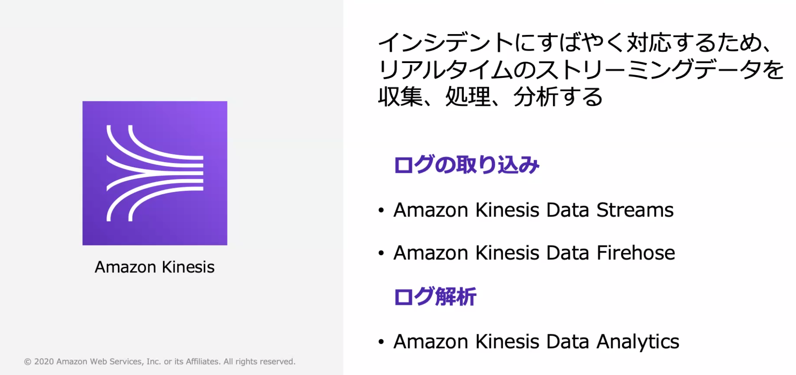
Kinesis Data Stream: コンシューマでシャードのデータを処理。
Kinesis Data Firehose: コンシューマを実装せずにデータを取り込める。バッファリング。
Kinesis Data Analytics: 標準 SQL でデータをリアルタイムに分析。
Kinesis Data Streams
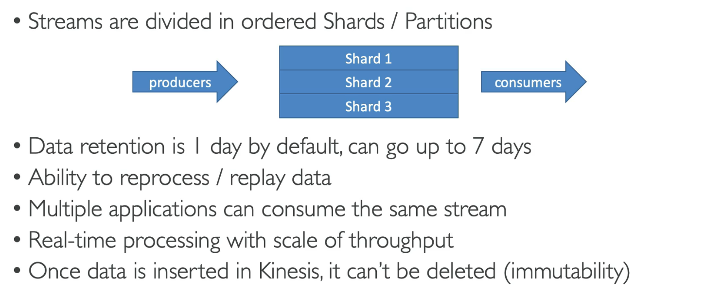
シャード
- データレコードサイズ: 最大 1 MB
- 書き込み速度: 最大 1MB/秒
- 読み取り速度: 最大 2MB/秒
- データ量に応じてシャードを Auto Scaling できる。
プロデューサー
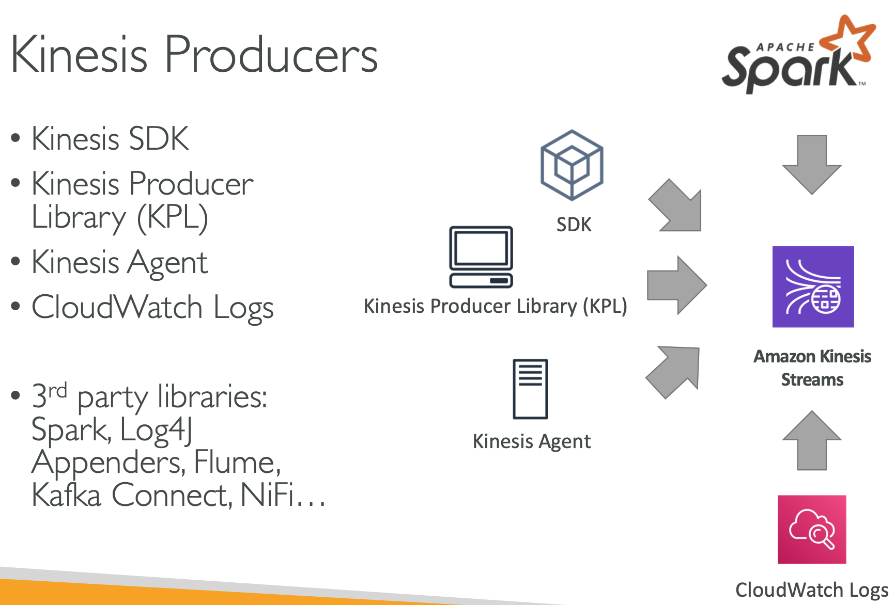
- Kinesis Producer Library: KPL
- Kinesis エージェント: サーバに入れるとログファイルを監視して自動送信してくれる
- CloudWatch/EventBridge Event のターゲットに Kinesis を指定してイベント投入も可能
コンシューマ
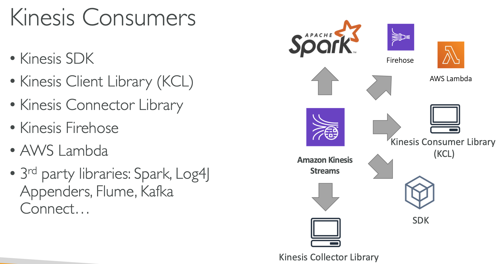
- EC2 や Lambda や Apache Spark で実装。
- Kinesis Client Library (Java) を使ってレコードを取得。
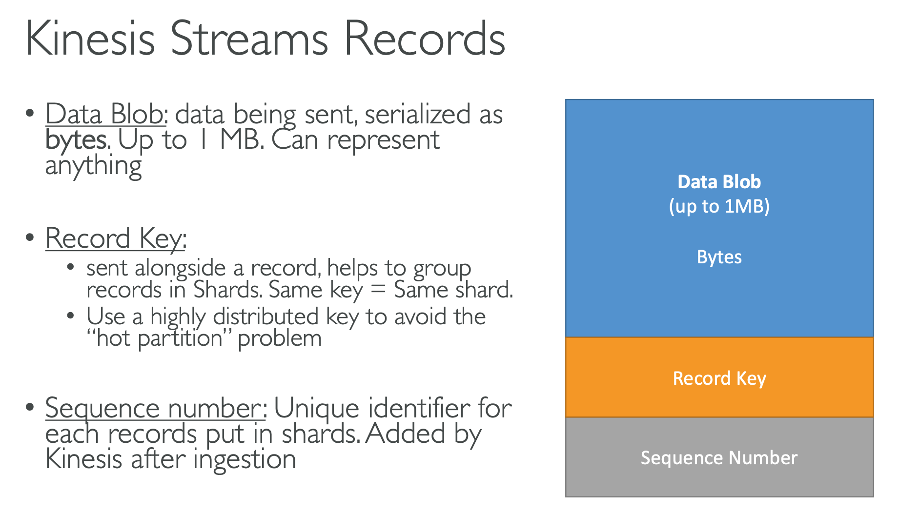
- シャードへの書き込みが 1MB or 1000 MPS を超えるとスロットリングが起きる → シャードを増やす必要がある。
- レコードが最大 1 MB なので、3 コンシューマーが同時に1つのシャードを読むと 2MB 制限を超えてスロットリングが発生する可能性がある。
問題の例:
Kinesis Firehose でコンシューマー側 EC2 インスタンスの処理が追いつかずレコードがドロップされる問題。

正答:
- レコードを処理するインスタンスを増やすために ASG を用いる。メトリクスは 現在のイテレーターの位置がシャードの最新レコードからどれだけ後ろにあるかを時間 (ミリ秒) で示す MillisBehindLatest を用いる。
- さらに、retentino period をデフォルトの 24 時間から増やす (最大7日間) ことで、レコードがドロップされにくくする。
誤答:
- シャードを増やす: プロデューサー側でスロットリングを起こしているならシャードを増やす意味があるが、コンシューマー側の処理能力不足なのでこの場合は意味がない。
- Lambda に移行する: 同じコードが Lambda で動くだけなので意味がない。。と言ってるけど、シャードも増やせば同時実行数が増えてスループットが上がるのではないのか？
- 2つの解答の組み合わせでなく、それぞれ単体で効果があるもの、という問題？
- シャードを減らす: スループットは落ちるけど、プロデューサー側でスロットリングを起こしては意味がない。
{kind=link}
{kind=link}
Kinesis Data Firehose
- コンシューマのアプリ実装が不要
- Lambda を噛ませてデータ変換も可能
- 送信先として S3, Redshift, Amazon Elasticsearch Service, Splunk に対応
- 送信先が S3 の場合は事前圧縮も可能 (GZIP, ZIP, SNAPPY)
- ほぼリアルタイム (Min 60-sec latency)
バッファリング
- バッファリング設定に基づいてバッファリング・連結して送信先へ送信
- S3 のスループットでは追いつかない場合にも Data Firehose が使える。
Data Streams vs. Data Firehose
用途
- Data Streams: データを処理・分析するカスタムアプリの実装する場合。
- Data Firehose: 直接送信先に保管する場合に。
リアルタイム性
- Data Streams: 1秒以下でレコードがストリームに書き込まれる。
- Data Firehose: 送信先への保存まで 60~900 秒かかる。Near realtime であることに注意。
データ操作
- Data Streams: コンシューマでリアルタイムに処理。
- Data Firehose: バッチで非同期に呼ばれる Lambda 関数で実装。
暗号化
- Data Streams: シャードに保管するレコードの SSE-KMS 暗号化を設定できる。
- Data Firehose:
- バッファリングはメモリ上なので暗号化をサポートしていなかった。
- 2019 より SSE-KMS に対応した。
- https://aws.amazon.com/jp/about-aws/whats-new/2019/11/amazon-kinesis-data-firehose-adds-support-for-customer-provided-keys-for-server-side-encryption/
- VPC フローログに Security Group の ID と GeoIP 情報を追加。
- CloudWatch Logs からの Lambda トリガーはメトリクスフィルター？
- サブスクリプションフィルターも Lambda を呼べるが、Data Streams, Data Firehose もサポートしているので迂遠。
Kinesis Data Analytics
標準 SQL でリアルタイム でストリーミングデータを処理・分析。
入力・出力ともに Data Stream / Data Firehose。
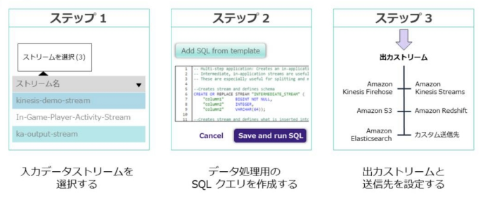
- 高信頼性: S3 同様に3リージョンに自動的にレプリケーションされる。
Amazon Athena
S3 に保管されたデータを標準 SQL でインタラクティブにクエリできる。
分散 SQL エンジン Presto のマネージドサービス。
テーブル (スキーマ) 作成には AWS Glue のデータカタログが使える。
AWS Glue
- 完全マネージド型の ETL (抽出、変換、ロード) サービス。
- 仮想的なスキーマを見つけてテーブル (データカタログ) を作成してくれる
ハンズオン
https://github.com/aws-samples/amazon-s3-datalake-handson/tree/master/JP/lab4
- AWS QuickSight は BI ツール。
Athena と暗号化
- 同一リージョンの S3 に保存されている暗号化されたデータにクエリを実行できる。
- S3 のクエリ結果および AWS Glue データカタログ内のデータを暗号化することもできる。
- S3 と Athena 間のデータ転送は TLS で暗号化される。
- Kinesis の SSE-KMS と S3 のデフォルト暗号化を利用すると暗号化されたままデータ分析可能。
- Producer - (TLS) -> Kinesis Data Firehose - (TLS) -> S3 -> Athena
インスタンス内の Web サーバログを Firehose で S3 に保管して Athena で分析する。
- インスタンスに SSH ログインして yum で Kinesis エージェントをインストール
- エージェントの設定ファイル (/etc/aws-kinesis/agent.json) で監視するログと送信先の Firehose を指定。
"flows": [
{
"filePattern": "/var/log/httpd/access_log",
"deliveryStream": "<DeliveryStream>"
}
]
-
エージェントを開始
- sudo systemctl start aws-kinesis-agent.service
-
AWS Glue の管理コンソールで S3 バケットに対するクローラを追加する
- Athena で Data Catalog をデータソースとしてクエリを実行する。
AWS QuickSight
インメモリBIツール。
CloudWatch
CloudWatch メトリクス → アラーム/ダッシュボード
- メトリクス: AWS サービスや OS のメトリクス収集
-
アラーム: メトリクスしきい値による通知
- 通知先: SNS, Auto Scaling, EC2 アクション(停止・再起動等)
- アプリ連携に使えるのは SNS だけ。
-
ダッシュボード: メトリクスのグラフや統計の表示。
CloudWatch Logs
-
AWS サービスのログ収集・保管:
- EC2 インスタンスの OS/アプリケーションログ → 要 CloudWatch Agent
- VPC Flow Logs も CloudWatch Logs に投入される。
-
保持期間: 1日～10年、無制限で指定可能。
- S3 にエクスポートできる。
CloudWatch Events
-
各種 AWS サービスから発生するイベントに対するアクション実行 → SNS, SQS, Lambda 等
- 例: S3 へのデータ投入時に Lambda 呼ぶ。
- サービスごとに発生するイベントが用意されている。
- CloudTrail をイベントソースにして AWS API 実行を処理することも可能。
-
CloudWatch Events はサービス内から外に発生するイベント、CloudTrail はサービスに向けた API 操作のトレイル。

CloudWatch メトリクス
AWS サービスや OS のメトリクス収集
- Lambda や AWS API のエラーなどもメトリクスで監視できる。
- メトリクスデータは 15 か月間保持されるが、古いデータは解像度が下がる。
- https://docs.aws.amazon.com/AmazonCloudWatch/latest/monitoring/cloudwatch_concepts.html#Metric
- EC2の標準モニタリングは5分に1回。詳細モニタリングを有効にすると1分1回
カスタムメトリクス
- CloudWatch Agent や PutMetricData API で発行。
- EC2 インスタンスのメモリ使用量、EBS ボリュームの残りサイズ等。
- 標準解像度: 分単位
- 高解像度: 秒単位
- Metrics produced by AWS services are standard resolution by default.
- When you publish a custom metric, you can define it as either standard resolution or high resolution.
- When you publish a high-resolution metric, CloudWatch stores it with a resolution of 1 second, and you can read and retrieve it with a period of 1 second, 5 seconds, 10 seconds, 30 seconds, or any multiple of 60 seconds.
CloudWatch メトリクスのグラフと異常検出
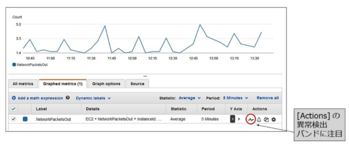
GetMetricStatistics API
- メトリクスのエクスポート
aws cloudwatch get-metric-statistics --namespace AWS/EC2 --metric-name CPUUtilization --dimensions Name=InstanceId,Value=i-06e91bf508fd3bf9f --statistics Maximum --start-time 2019-09-10T00:00:00 --end-time 2019-09-11T00:00:00 --period 360 --profile aws-devops --region eu-west-1
CloudWatch Logs Metric Filter
- 指定した文字列 ("ERROR" 等) でログをフィルタしてカウントをカスタムメトリクスとして取得。
- メトリクスなので得られるのはアラーム/ダッシュボードによる統計情報。

CloudWatch アラーム
- メトリクスしきい値による通知
- アクション: SNS, AutoScaling, EC2 アクション
- NOTE: CloudWatch アラームは CloudWatch Events のデータソースにないので SNS 経由で連携する
Anomaly detection
- 標準偏差の幅をしきい値に指定する
通知は各状態への移行時に対して設定できる
請求アラーム: Billing alarm
- 全リージョンの請求が集約される us-east-1 のみで設定できる。
- 全体の設定とサービス毎の設定が可能。
CloudWatch Events/EventBridge
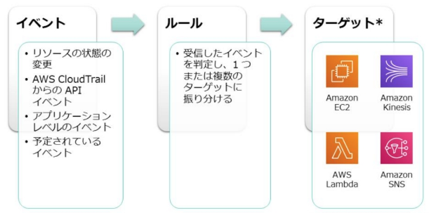
-
イベントソース
- AWS リソースや CloudTrail をデータソースにしたイベント
-
AWS リソース統合がサポートしていないイベントを取得するには CloudTrail からの API イベントを監視する (例 EC2:CreateImage での AMI 作成を監視する)
- Read-only API (List, Get, Describe) は対象外
-
EventBridge はサードパーティーの Service partners もサポート
-
ターゲット
- SNS, SQS, Lambda 等、各種サービス。
-
ルール:
- イベントソースとターゲットを指定したもの
- スケジュールの場合はイベントソースにスケジュール式 (rate, cron) を指定
CloudWatch/EventBridge Event Bus
- クロスアカウントでのイベント送信。

- 各アカウントはデフォルトのイベントバスを 1 つ持つ。
-
送信側アカウント
- 受信側のイベントバスをターゲットとするルールを設定する。
-
受信側アカウント
- イベントバスで送信側アカウント ID を許可する。
- 送信側アカウントからのイベントに一致するルールを設定する。
-
Organization との統合
- 許可するアカウント ID を個別指定する代わりに Organization の全アカウントを許可できる。
- https://aws.amazon.com/jp/about-aws/whats-new/2017/06/cloudwatch-events-adds-cross-account-event-delivery-support/
中央アカウントのイベントバスに各アカウントからイベント送信するように設定、中央アカウントで 特定イベントを Lambda で監視する、等のユースケース。
クロスアカウントクロスリージョン設定
- 複数アカウントの CloudWatch メトリクス、アラーム、ダッシュボードを1つのアカウントにまとめられるらしい。
- https://dev.classmethod.jp/articles/shared-cloudwatch-to-other-account/
- https://docs.aws.amazon.com/ja_jp/AmazonCloudWatch/latest/monitoring/Cross-Account-Cross-Region.html
S3 イベントとの違い
- S3 イベントはバケットレベルオプションとして指定し、取得できるのはオブジェクトレベルのイベントだけ。
- CloudWatch Event の S3 データソースはバケットレベルとオブジェクトレベル両方のイベントを対象にできる。
- CloudWatch Event の S3 データソースを有効にするには CloudTrail で対象バケットに対してトレイルが設定されている必要がある。
- S3 イベントのターゲットは SNS, SQS, Lambda だけ。
問題例:
新しいユーザが作成されたときに警告する自動化された警告システムを実装します。アラートがほぼリアルタイムで、ユーザー作成イベントに関する可能な限り多くの情報を提供することが期待されています。次の選択肢のうち、これらの要件に対応するために最も適したサービスはどれですか？
正: CloudWatch Event Rules
誤: CloudWatch Metrics Filter, CloudWatch Event Bus, CloudTrail
- CloudWatch Event はほぼリアルタイムの応答とイベントに関するより詳細な情報を提供します。
- Metric Filters は応答の自動化に使用できますがリアルタイムではなく、CloudWatch Event よりもイベントに関する情報が少なくなります。
AWS X-Ray
- トレースとサービスマップとデバッグ
サービスマップ
- リクエストを追跡することで使用されたサービスのマップが作成される
- 次のようなことが可能
- 依存関係ツリーの可視化
- 複数 AZ やリージョンで実行しているときに発生するレイテンシーやエラーを検出
- 正常に実行されていないサービスを特定
- サービスグラフ
- 選択期間のサービスとそのインタラクションを視覚的に表示。
- ノードはサービスを表しており、ノード間のエッジはサービス間の呼び出しを表す。
- ノードとエッジは、それぞれ関連付けられた一連の統計情報を持つ。
トレース
- 各回のリクエスト呼び出しのメトリクスによるコールトレース。
トレース
- リクエスト１回ごとのトレース。
セグメント
- セグメントドキュメントはリクエストの JSON 表現。
- リクエストに関する情報、アプリ内部で実行する処理に関する情報、サブセグメントの情報を記録。
- PutTraceSegments API で X-Ray に送信。
サブセグメント
- サブセグメントを作成し、AWS サービスや外部 API への呼び出しや SQL クエリ実行などを記録。
- 下位のサブセグメントを含めることもできる。
注釈 (Annotation)
- セグメント、サブセグメントにつけられるタグ的なもの。キー・バリュー値のペア。
- GetTraceSummaries のフィルタに使用するタグを付けるのに使う。
メタデータオブジェクト
- セグメントとサブセグメントには追加のカスタムデータをメタデータオブジェクトとして保存することが可能。
- GetTraceSummaries でクエリしてトレースIDのリストを取得、BatchGetTraces でトレースのリストを取得。
- GetServiceGraph で Lambda からサービスグラフ情報を取得してレイテンシー問題やスロットリングを監視する例:
サンプリングルール
- X-Ray SDK に API をサンプリングさせる設定。
- デフォルト: 各秒の最初のリクエストと追加の 5% のリクエスト。
X-Ray デーモン
-
セグメントデータを収集して X-Ray に送信するデーモン。
- 2000/udp でリッスン。
- セグメントドキュメントをキューにバッファ、PutTraceSegments によりバッチでアップロード。
- AWSXRayDaemonWriteAccess 管理ポリシーを使う。
-
SDK はセグメントドキュメントをデーモンに送る。
- Lambda ランタイムと Beanstalk には含まれてる。
-
EC2 の場合
- ユーザデータスクリプトで X-Ray デーモンを落としてきてインストール。
-
ECS の場合
-
X-Ray デーモンを実行するコンテナをタスク定義に含める (サイドカーコンテナ)。
- ポートマッピングを設定して 2000/udp へのトラフィックをマップする。
- Docker イメージは自分で作っても公式のものを使用しても良い。
-
Task Definition
-
{
"name": "xray-daemon",
"image": "amazon/aws-xray-daemon",
"cpu": 32,
"memoryReservation": 256,
"portMappings" : [
{
"hostPort": 0,
"containerPort": 2000,
"protocol": "udp"
}
]
}
- [https://docs.aws.amazon.com/ja\_jp/xray/latest/devguide/xray-daemon-ecs.html](https://docs.aws.amazon.com/ja_jp/xray/latest/devguide/xray-daemon-ecs.html)
-
Lambda の場合
-
Lambda コンソールで AWS X-Ray のアクティブトレースを有効化。
- 関数の実行ロールにポリシーが追加される。
-
X-Ray デーモンは Lambda ランタイムで自動的に実行される。
- X-Ray SDK を関数のデプロイパッケージにバンドルしてコードから使用する。
- 環境変数でデーモンへのアドレス:ポートなどが渡される。
-
-
Ref. https://docs.aws.amazon.com/ja_jp/xray/latest/devguide/xray-daemon.html
問題例
- ECS で X-Ray を利用する
解答
- Produce a Docker image that runs the X-Ray daemon.
- Upload the image to a Docker image repository, and then deploy it to your Amazon ECS cluster.
- Configure the network mode settings and port mappings in your task definition file to allow traffic on UDP port 2000.
{
"name": "xray-daemon",
"image": "123456789012.dkr.ecr.us-east-2.amazonaws.com/xray-daemon",
"cpu": 32,
"memoryReservation": 256,
"portMappings" : [
{
"hostPort": 0,
"containerPort": 2000,
"protocol": "udp"
}
]
},
{
"name": "scorekeep-api",
"image": "123456789012.dkr.ecr.us-east-2.amazonaws.com/scorekeep-api",
"cpu": 192,
"memoryReservation": 512,
"environment": [
{ "name" : "AWS_REGION", "value" : "us-east-2" },
{ "name" : "NOTIFICATION_TOPIC", "value" : "arn:aws:sns:us-east-2:123456789012:scorekeep-notifications" },
{ "name" : "AWS_XRAY_DAEMON_ADDRESS", "value" : "xray-daemon:2000" }
],
"portMappings" : [
{
"hostPort": 5000,
"containerPort": 5000
}
],
"links": [
"xray-daemon"
]
}
https://docs.aws.amazon.com/ja_jp/xray/latest/devguide/xray-daemon-ecs.html
Amazon ES: Elasticsearch Service
https://aws.amazon.com/jp/elasticsearch-service/
概要
- Elasticsearch のマネージドサービス。
- 全文検索や Kibana によるデータ分析や可視化。
- リージョンサービスで VPC 外にインスタンスが作成される (非サーバレス・マルチ AZ 可能)
- VPC エンドポイントからのプライベート接続もサポートされている。
- Ref. https://aws.amazon.com/jp/blogs/news/amazon-elasticsearch-service-now-supports-vpc/
EKL stack
- Amazon ES は ElasticSearch だけでなく Kibana も提供される。
Usecases
DynamoDB の全文検索
- DynamoDB をキー以外の値で検索したい場合は全レコードを取得することになるので、DynamoDB Stream で ES にデータを投入して ES にインデックスを作成して検索する。
CloudWatch Log の検索や可視化(やSIEM)
- リアルタイムなら Lambda, ほぼリアルタイムでよければ Firehose でログ投入する。
Tagging Storategy
https://aws.amazon.com/answers/account-management/aws-tagging-strategies/
Const management, Deployment target, Security control (ref. TBAC: Tag-based access control), etc.
オブザーバビリティ
オブザーバビリティ(可観測性)は、システムの出力を調査することによって内部状態を測定する能力。
メトリクスやログ、トレースを収集するためにシステムをインストルメントすることで実現する。
モニタリングとオブザーバビリティ
- モニタリングはオブザーバビリティの構成要素。メトリクスとほぼ同義。
- メトリクスを収集し、可視化ダッシュボードやアラートを構築し、継続改善するプロセス。
- モニタリング、トレース、ロギングを「オブザーバビリティの 3 本柱」と表現される。
ONE OBSERVABILITY DEMO
https://observability.workshop.aws/ja/installation.html
https://dev.classmethod.jp/articles/introduction-of-one-observability-demo-workshop/